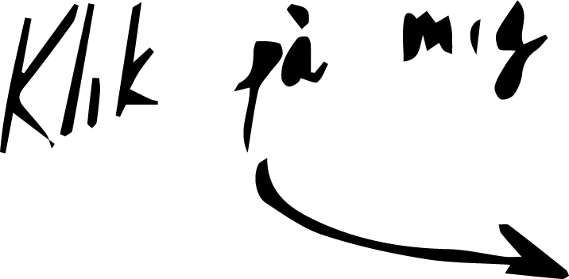
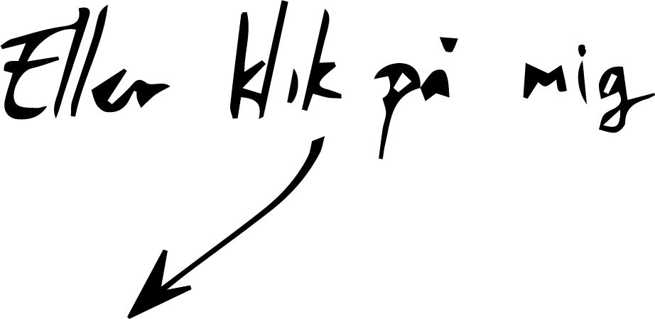
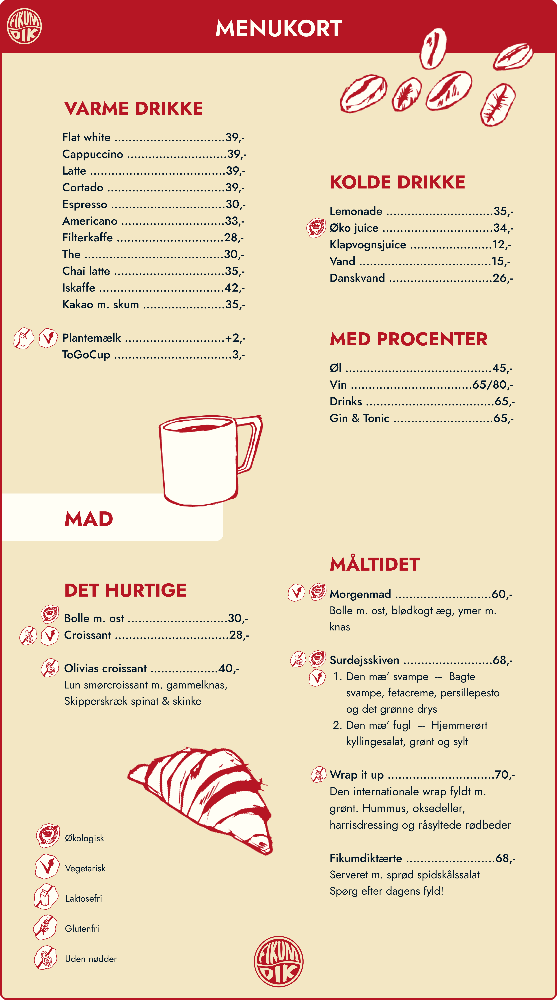
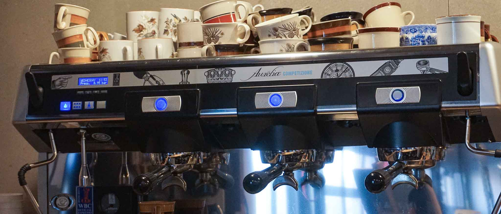
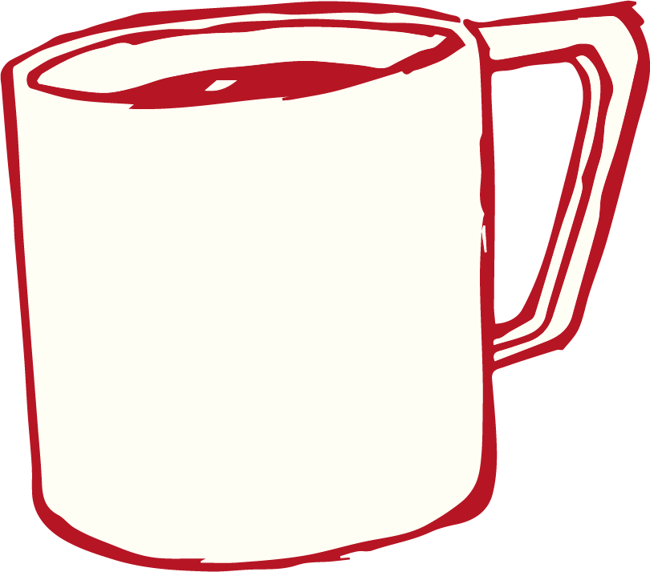
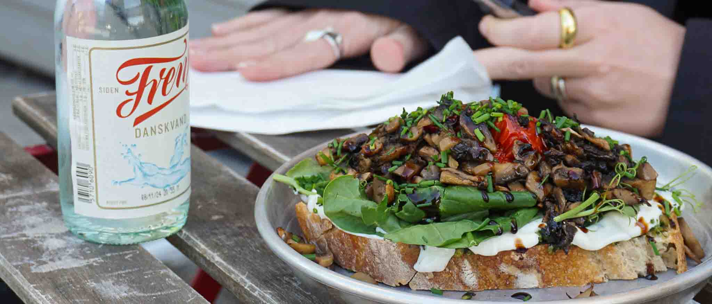
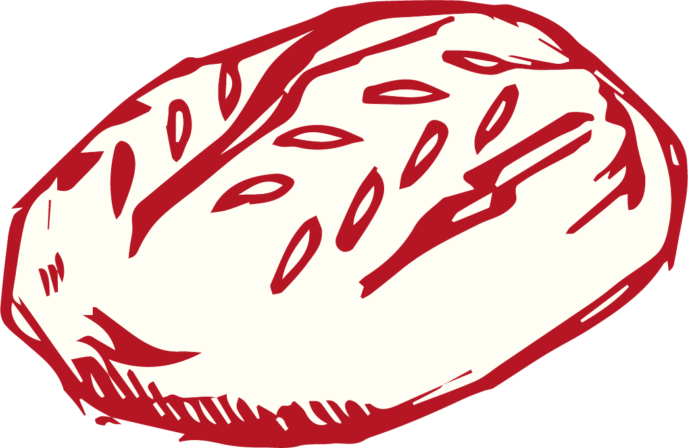

LOKALE RÅVARER ER BARE BEDRE
Her hos Fikumdik er der ikke så mange dikkedarer. Vores menu er derfor meget simpel. Dog er vi ikke gået ned på kvaliteten. Vi bruger udelukkende lokale leverandører, og vi udvælger dem med omhu. Ret lækre ting, hvis vi selv ska' sige det.




×
Skal du have kaf’? Kaffen, du kan nyde på vores café, får vi
leveret fra Stillers Coffee.
KAFFEN ER KLAR
Skal du have kaf’? Kaffen, du kan nyde på vores café, får vi
leveret fra Stillers Coffee.
Stillers Coffee er lokalt fra Aarhus og er kvalitet fra aller øverste hylde.
Du kan godt glæde dig!


×
Bagværket, du får serveret, er fra Jeremys. Et bageri liggende i Åbyhøj. Alt bagværk er
økologisk og af aller højeste kvalitet. Lige som vi allerbedst kan lide det.
ER DU SULTEN?
Bagværket, du får serveret, er fra Jeremys. Et bageri liggende i Åbyhøj. Alt bagværk er
økologisk og af aller højeste kvalitet. Lige som vi allerbedst kan lide det.
Hvilken variant frister mon dig mest?
